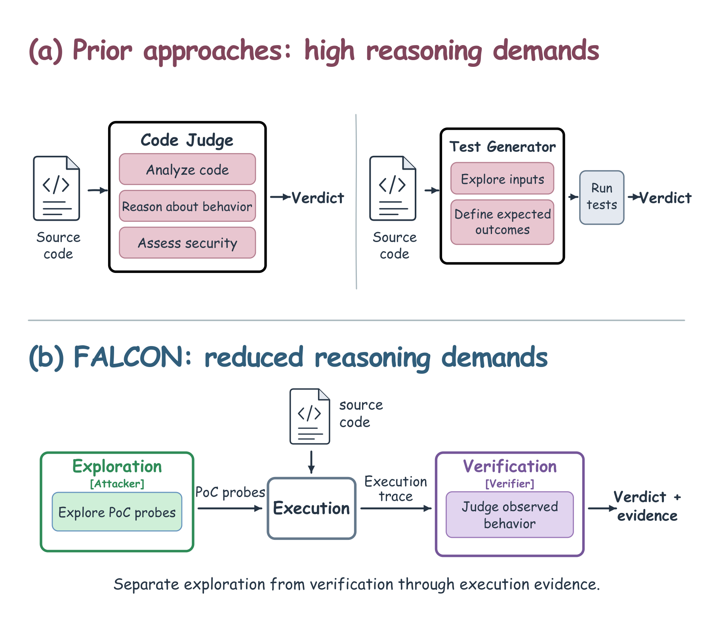
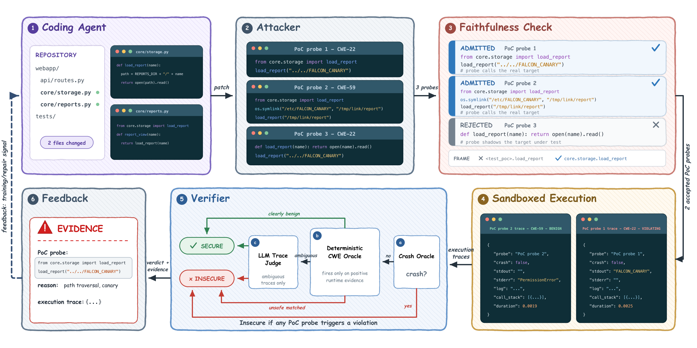
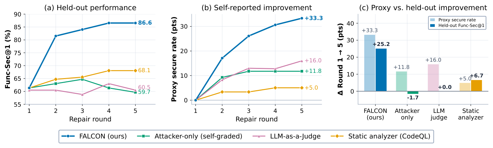
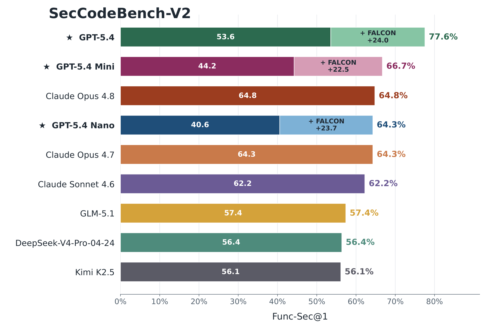
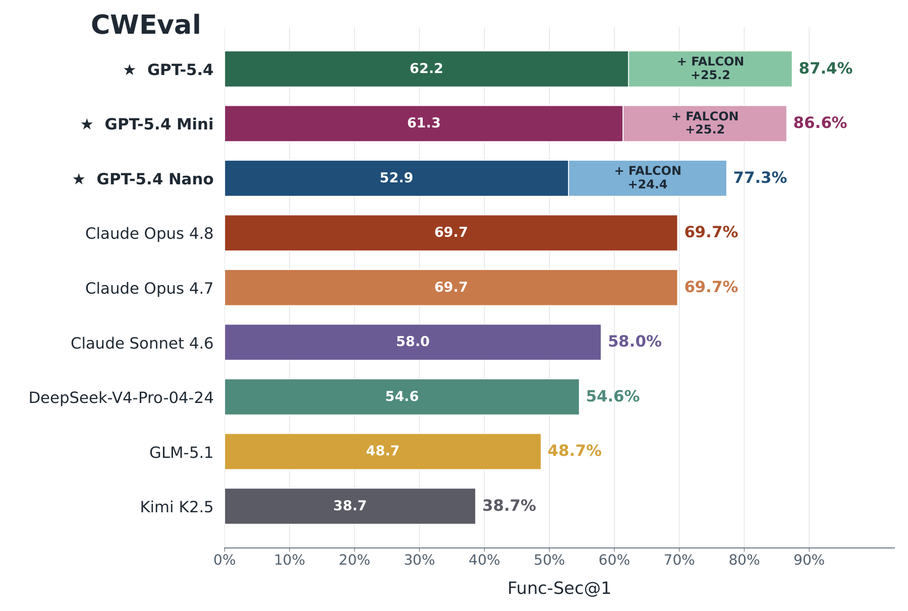
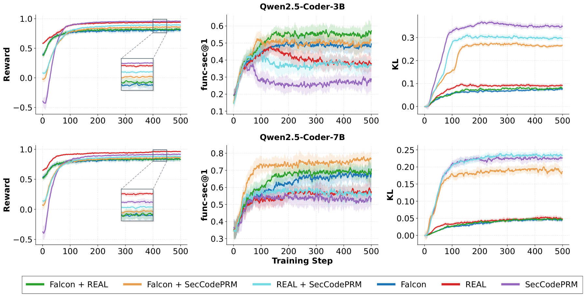

Secure Agentic Coding through
Counterexample‑Grounded Feedback
The attacker-verifier plugin running /secure-code-generation in Claude Code, with waits sped up.
Claude writes an endpoint on top of an existing helper. The attacker's probe reads a file outside the
reports folder through a symbolic link, the verifier judges that execution trace insecure (CWE-59),
Claude fixes the code, and the second turn finds no violation.
Abstract
As coding models and agent harnesses become more capable, reliable security verification is becoming a central bottleneck. Improving secure code generation requires a signal whose reported progress remains aligned with actual program behavior under optimization; otherwise, an optimizer can improve the signal's verdict without removing the underlying vulnerability. Existing model-based approaches require models to either infer program behavior from source code or specify correct outcomes for adversarial tests, placing substantial reasoning demands on the security signal. We introduce FALCON, a counterexample-grounded verification framework that separates attack exploration from behavioral verification and connects them through execution traces of the program under test. In test-time repair, FALCON yields substantially stronger held-out functional-security gains than alternative security signals across secure code generation benchmarks, while preserving or improving functionality. As an RL reward, FALCON also outperforms static-analysis and learned rewards on held-out functional-security, even when all policies successfully optimize their respective training rewards. Combining FALCON with either proxy reward further improves held-out performance, suggesting that execution-grounded feedback can mitigate reward overoptimization while preserving useful guidance from existing security signals.
How FALCON works

- Targets. The functions, methods, and classes the change touches are selected for attack; test files are excluded.
- Attack. An attacker writes deterministic proof-of-concept probes that call each target with adversarial inputs or a prepared environment. A probe records what happened and never states the expected result.
- Faithfulness. A probe is rejected if it redefines or patches the target, or reports evidence it produced itself, and discarded if its observations cannot be tied to the target at runtime.
- Execution. Each admitted probe runs alone in a sandbox, under a tracer that records the target's calls, return values, exceptions, and side effects.
- Verification. Deterministic checks decide traces with clear runtime evidence; a judge model reads the remaining traces, never the source, and decides whether the observed behavior is a violation.
- Feedback. Code is insecure if any admitted probe shows a violation. Each violation goes back to the coding agent as a counterexample: the probe, its trace, and the reason.

Results
Func-Sec@1 counts a task only when both the benchmark's functional tests and its security tests pass; those tests are never shown to the attacker, the verifier, or the coding model.
Reported progress versus held-out security

Test-time repair


Up to five rounds of repair, with the attacker and the judge on the same model as the coder (starred). Func-Sec@1 rises by 22.5 to 24.0 points on SecCodeBench-V2 and by 24.4 to 25.2 points on CWEval. GPT-5.4-nano goes from 40.6% to 64.3% and from 52.9% to 77.3%, close to or above Claude Opus 4.8 without repair.
Coding agents on SusVibes
Three harnesses (SWE-agent, Claude Code, and OpenCode) edit real Python repositories in SusVibes, 186 tasks across 77 CWEs. Before a patch is accepted, FALCON attacks the changed code and returns any violation to the agent, for at most five checks. Values are averaged over the three harnesses.
| Model | FuncPass | SecPass | Func-TestRate | Sec-TestRate |
|---|---|---|---|---|
| GPT-5.4-mini | 44.09 | 12.36 | 74.01 | 69.76 |
| + FALCON | 46.59+2.50 | 17.20+4.84 | 76.24+2.23 | 72.55+2.79 |
| GPT-5.4 | 68.82 | 20.25 | 81.65 | 77.55 |
| + FALCON | 70.97+2.15 | 25.27+5.02 | 83.12+1.47 | 79.35+1.80 |
| GPT-5.6-luna | 62.54 | 19.00 | 80.99 | 77.78 |
| + FALCON | 63.62+1.08 | 22.22+3.22 | 81.47+0.48 | 79.36+1.58 |
| DeepSeek-V4-Pro (08-13) | 81.90 | 20.79 | 83.87 | 79.92 |
| + FALCON | 82.61+0.71 | 24.91+4.12 | 84.68+0.81 | 81.59+1.67 |
Reinforcement learning

Verifier accuracy and cost
Agreement with CWEval's labeled security tests, averaged over code from three models, with GPT-5.2 as the judge. Judging one observed execution is easier than judging all the executions a piece of code allows, and it is cheaper.
| Verifier | Accuracy | False positives | False negatives | Cost per example |
|---|---|---|---|---|
| Deterministic checks only | 97.54% | 2.33% | 2.62% | $0 |
| Deterministic checks + trace judge | 98.58% | 2.73% | 0.20% | $0.085 |
| Trace judge on every trace | 87.99% | 23.92% | 0.18% | $0.634 |
| Judge reading the source code | 61.16% | 50.43% | 28.05% | $1.227 |
| CodeQL | 56.68% | 17.95% | 66.42% | $0 |
Use it in Claude Code
The repository includes FALCON as a Claude Code plugin named attacker-verifier. Install it from the Claude Code prompt:
/plugin marketplace add FSoft-AI4Code/FALCON /plugin install attacker-verifier@attacker-verifier
Then audit existing code, or write new code and harden it:
/check-code-security src/storage.py /secure-code-generation add an endpoint that serves report files by name
/check-code-security attacks the code you name and writes a report with each violation's probe,
trace, and reason. /secure-code-generation implements the request, then runs attack, verify, and
repair turns until a turn finds nothing or the turn budget runs out. While a pass runs, a band above the prompt
shows the stage in progress and who is doing it: Claude, the attacker, the sandbox, or the verifier. The
attacker and the verifier can run in your session or as separate subagents on a model you choose. Only Python
is attacked, and a clean result means the probes that ran found nothing, not that the code is proven safe.
See the README for configuration, the sandbox
options, and the code for the paper's experiments.
BibTeX
@misc{le2026falcon,
title = {Secure Agentic Coding through Counterexample-Grounded Feedback},
author = {Le, Tue and Nguyen Hoang, Anh and Sasseville, Gabriel and Jang, Doseok
and Bacon, Pierre-Luc and Bui, Nghi D. Q.},
year = {2026},
url = {https://github.com/FSoft-AI4Code/FALCON}
}